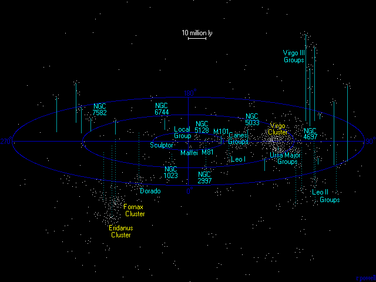
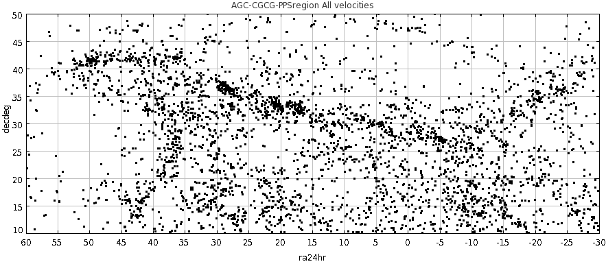
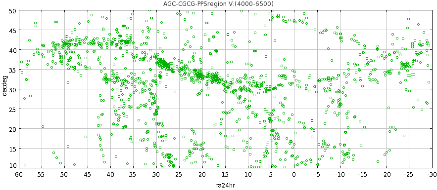
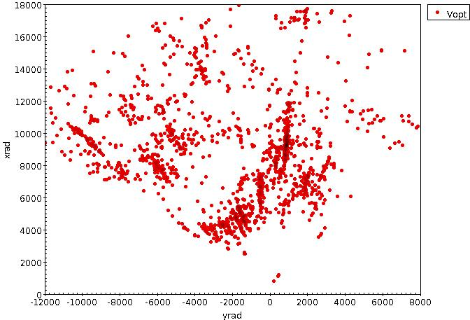
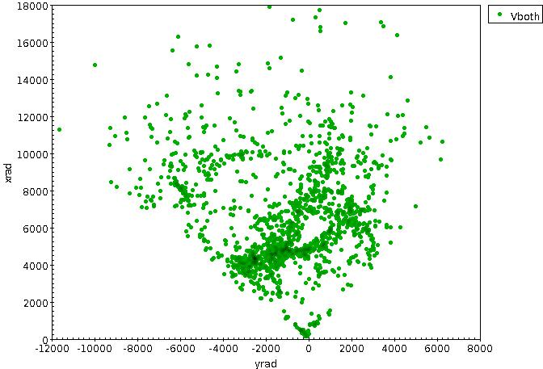
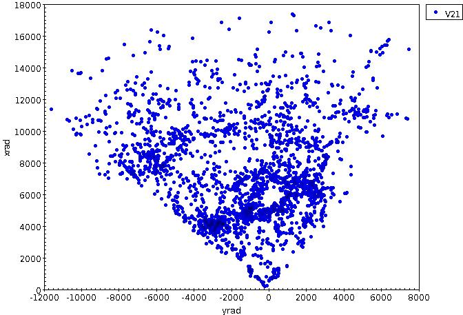
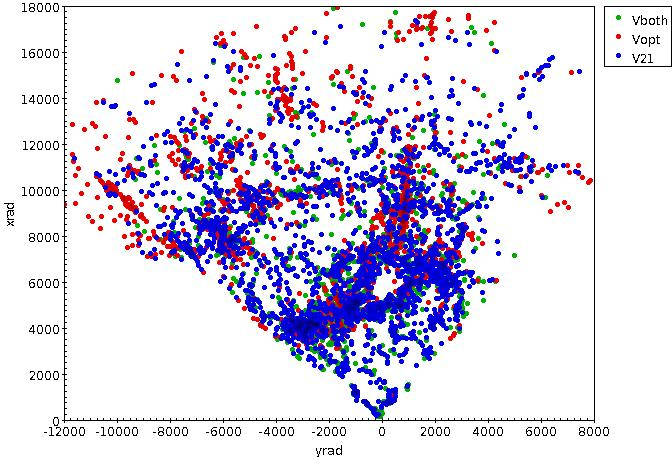
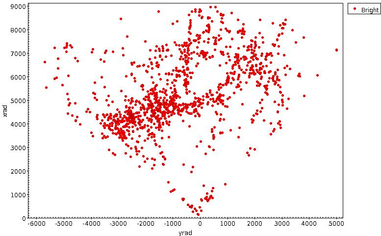
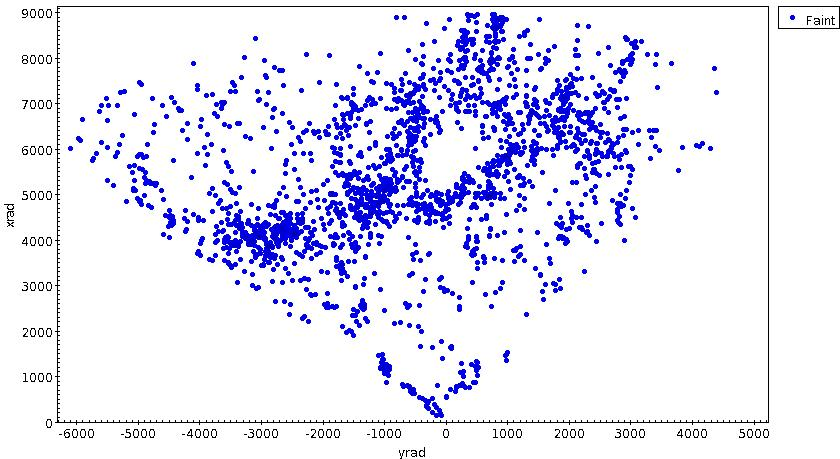
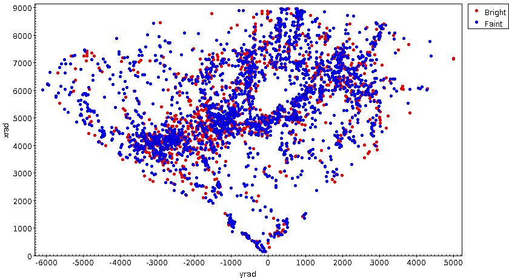

Credit:
Credit: Aaronson et al 1986 ApJ 302, 536
|
|
Credit: Aaronson et al 1986 ApJ 302, 536 |
|
The x axis shows the distance from us. The angular scale (in degrees) measures
the angular distance from the direction of the Virgo cluster as viewed from the Sun.
The heavy contours trace the heliocentric velocity expected for a galaxy at a given distance
away from us in different directions. The short dashed circles show the velocities we would expect
if the velocity field were not perturbed, that is, if the Virgo cluster were not there.
|
 Credit: Davis and Peebles, 1983, ARA&A 21, 109 |
|
The galaxy NGC 4565 is a spiral galaxy viewed almost perfectly edge-on.
It is located at an angular distance of about 13 degrees from
the center of the Virgo cluster.
Use the tools you know about (e.g. NED and SKYDEG) to learn more about this galaxy.
|
 Credit: R. Ritter |
| Galaxies with supergalactic latitude SGB = 0 degrees lie in this plane. Supergalactic longitude SGL is measured along the plane with its origin (SGL = 0 degrees, SGB = 0 degrees) lying near Galactic longitude l = 138 degrees and latitude b = 0 degrees (i.e. in the Galactic plane too). An alternative system, called the cartesian supergalactic coordinates SGX, SGY, SGZ. It requires knowledge of distance because its units are in Megaparsecs. SGX is directed towards the point SGL = 0 degrees, SGB = 0 degrees and the SGZ axis towards the north supergalactic pole, SGB = +90 degrees. With this definition, SGX and SGY are in the supergalactic plane, where SGZ = 0 degrees. |
 Credit: R. Powell |
| R.A. & Dec. | |
| l, b | |
| SGL, SGB | |
| SGX, SGY, SGZ |
| To calculate distance, we use a "hybrid flow model" developed by Karen Masters (CU PhD 2004, now at the University of Portsmouth, UK) to calculate the distance to each object. Since we know that Hubble's Law does not apply locally, Karen's approach to assigning distances is a bit complicated. It uses "primary distances" where they are available and has a built-in assignment of some galaxies to their parent groups or clusters (most notably, the Virgo cluster). In the absence of some redshift- independent distance measurement, it uses a model of the local velocity field (predicting the distance to a galaxy of a given observed heliocentric velocity in a specific direction) that Karen devised by examining all of the galaxies with known distances. It's not perfect, but it is better than using Hubble's Law. Notice that Karen's diagram extends to larger distances that the one from Davis and Peebles which we used above. |

from Masters, 2004, CU Ph.D. thesis. |
|
  |
|
 |
 |
 |
 |
|
 |
 |
 |